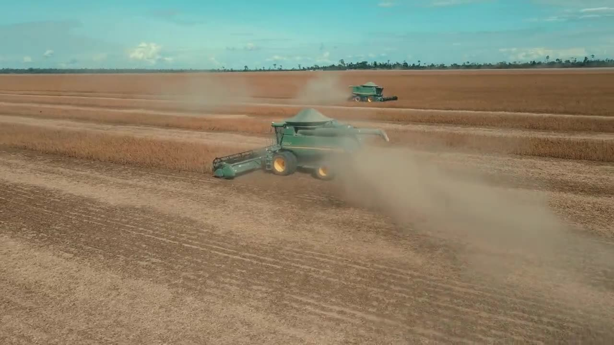
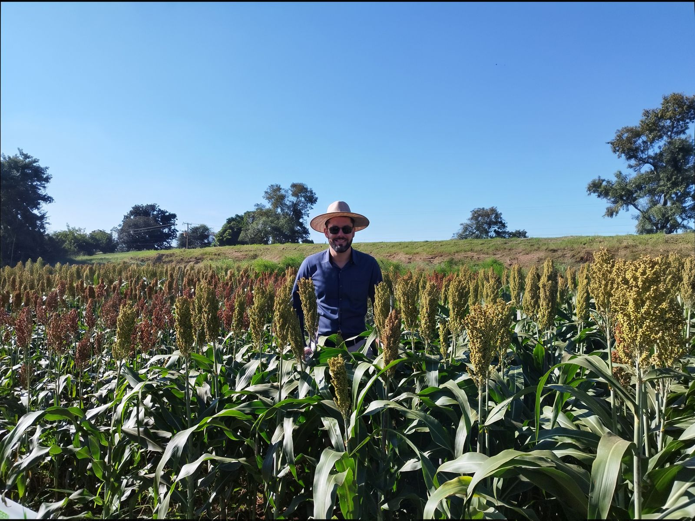
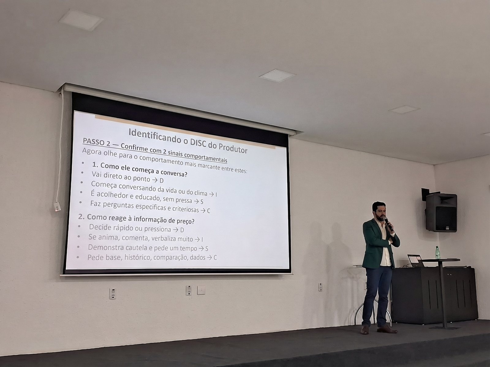
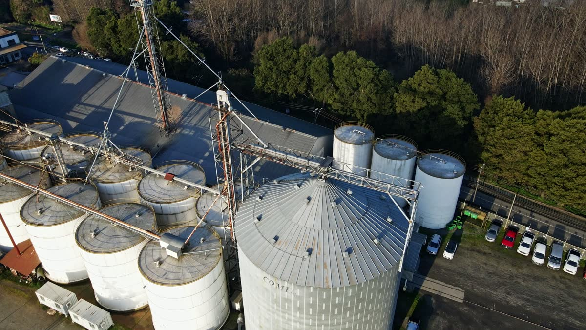
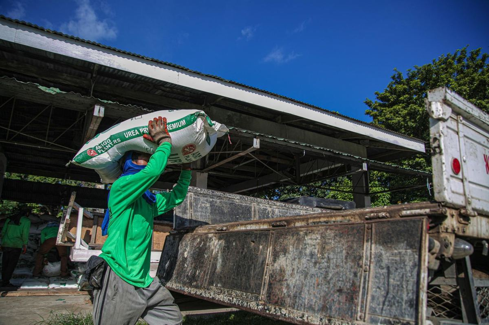
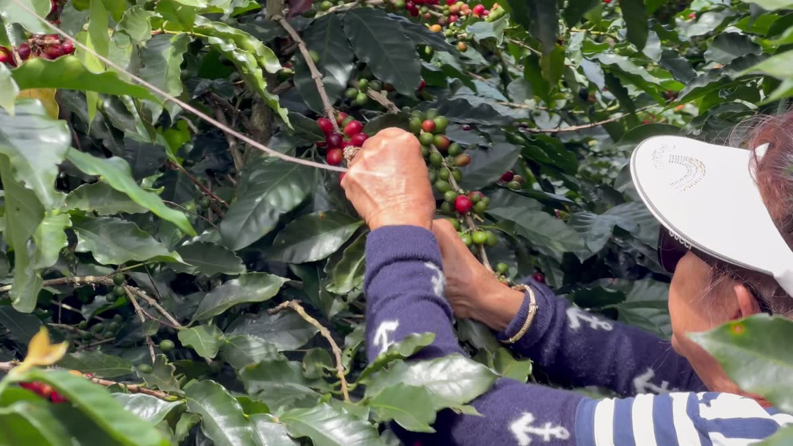
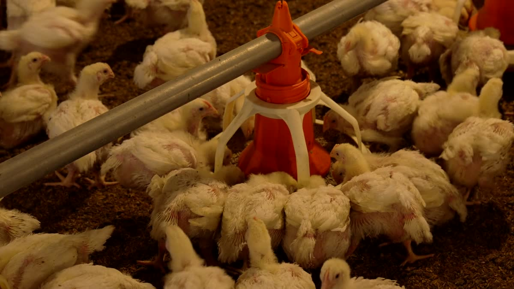

Do diagnóstico em campo ao líder formado: consultoria e treinamentos para empresas do Agro.
Comercial, Originação, Compras, Logística, Crédito, Marketing e Pessoas, integrados ao back-office.
Na carreira do fundador
Duas frentes que se completam
A consultoria estrutura as áreas. Os treinamentos formam as pessoas que vão tocá-las.

Estruturamos as áreas de negócio
Reestruturação de áreas de negócio, planos de expansão e mentoria e desenvolvimento de líderes.
Ver consultoria →
Formamos quem vai tocar a área
4 trilhas e 22 módulos de educação corporativa, presencial ou online, do workshop à trilha com consultoria.
Ver treinamentos →Empresas do Agro ou com atuação vinculada ao Agro
Tanto as que passam por crise ou baixa performance quanto as estruturadas que querem expandir.

"Quero comercializar com margem."
Momento comum: expansão geográfica

"O Comercial vende, mas a empresa não recebe."
Momento comum: margem apertada

"Preciso profissionalizar meu processo comercial."
Momento comum: troca de gestão

"Meu estoque ficou caro e o concorrente vende mais barato."
Momento comum: sucessão familiar
Método Causa Real
Primeiro encontramos a causa no campo ou dentro da empresa. Depois corrigimos o processo e formamos quem vai sustentar o resultado.
Diagnóstico
Campo, time, clientes, fornecedores, números e back-office. Sai com as causas mapeadas e planos de correção.
Estruturação
Presença na empresa ajustada a cada fase, reuniões semanais com o time e indicadores acompanhados.
Continuidade
Um responsável interno preparado para tocar a área. A empresa não fica dependente da consultoria.
Impactos que já geramos
Empresas onde já geramos resultado:
A causa era crédito, não preço. Margem preservada.
De 2 para 11 estados. Inadimplência abaixo de 0,10%.
Cerca de R$ 5 milhões de margem bruta por ano.
Sem investir em armazém. Crédito de ICMS virando caixa.
Perguntas frequentes
Quanto tempo dura um trabalho?
O diagnóstico tem, em média, de 2 semanas a 1 mês, de acordo com a disponibilidade das pessoas a serem avaliadas. A estruturação segue com acompanhamento mensal até a área andar sozinha. Treinamentos vão de uma palestra de 1 a 2 h a uma trilha In Company de 16 a 24 h.
O trabalho é presencial?
O diagnóstico é feito em campo e dentro da empresa. Depois a presença é ajustada a cada fase, com reuniões semanais com o time. Os treinamentos podem ser presenciais ou online.
Quanto custa?
Cada proposta é montada sob medida depois de uma conversa sobre o momento da empresa, o escopo e o formato.
Quais regiões vocês atendem?
Todo o Brasil. Nossa base fica no Sul de Minas e já atuamos em 17 estados.
Quer saber mais sobre a Agribusiness?
Conversar pelo WhatsApp